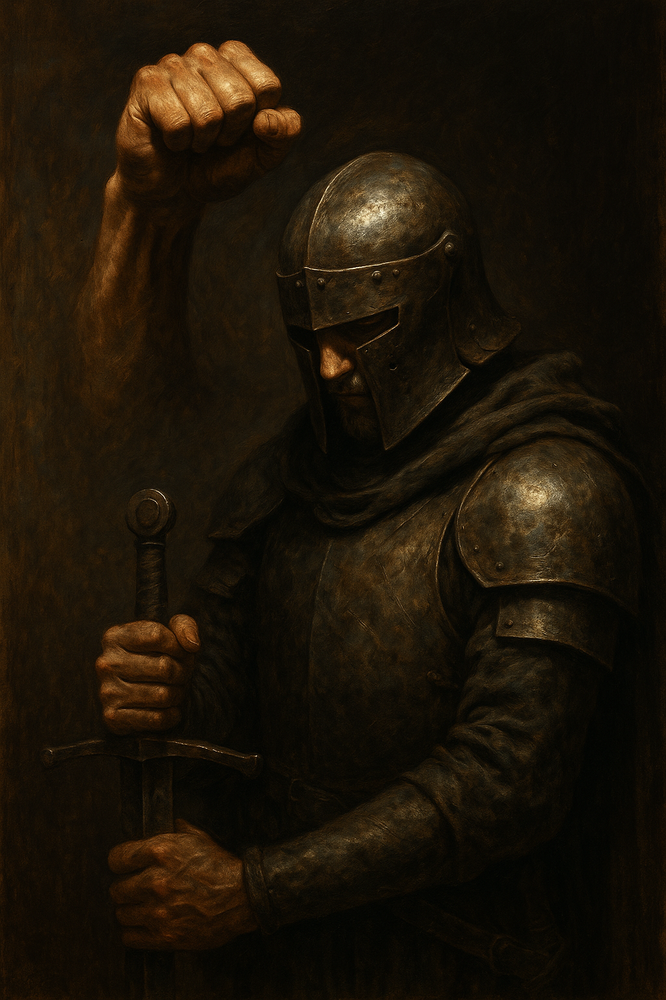

Ztracený rytíř
Proč dnes chlapi neví, kým být

Dřív měl chlap jasno. Rytíř chránil svou zem, rodinu i čest. Měl meč, štít a přísahu. Dnešní „rytíř“ často sedí na gauči, drží v ruce mobil místo meče a zbroj mu nahradilo pohodlí. Problém není v době – problém je v tom, že bez jasného rámce se chlap ztratí. Možná se v tom poznáváš: práce, vztah, kamarádi… a přesto někde uvnitř pocit bloudění. Chybí směr, pevný bod, jasné proč. To je syndrom ztraceného rytíře, příběh celé generace.
Proč chlapi ztratili svou identitu
Moderní společnost rozebrala pevné body, o které se muži opírali. Přežití, ochrana, budování – to všechno převzal komfort a instituce. Když tlak zmizí, mizí i adaptace. Když není důvod být silný, síla chátrá. Další rána přichází z rodin: mnoho kluků vyrůstá bez přítomného otce – fyzicky nebo mentálně. Chybí skutečný model pevnosti a laskavé autority, která by předala zodpovědnost a hranice. Prázdné místo pak vyplní internet a pop-kultura, kde se mužská role houpe mezi agresivní pózou a pasivním „hodným klukem“ bez směru. Do toho přidej kulturu okamžité odměny: všechno jde objednat, odložit, zrušit. Bez nároků páteř měkne – z rytíře se stává turista, který čeká, že ho cesta sama někam dovede.
Důsledky ztraceného rytíře
„Tohle je přece pohodlnější,“ řekneš si. Jenže pohodlí účtenku nikdy neztrácí. Chlap bez směru je jako loď bez kormidla – pluje, dokud nepřijde první bouře. Psychicky to znamená úzkosti, deprese a závislost na dopaminu: nekonečné scrollování, hry, porno, drobné úniky, které se slepí do velkého prázdna. Schopnost vydržet klesá, schopnost tvořit mizí. Ve vztazích se role převrátí: žena přebírá vedení, protože někdo vést musí. Respekt se vytrácí a s ním i přitažlivost; oba jsou frustrovaní – ona proto, že se nemá o koho opřít, on proto, že ztrácí sebeúctu. Společensky roste pasivita: místo lidí, kteří stojí za pravdou a berou riziko, přibývá pozorovatelů, komentátorů a stěžovatelů. A nejtvrdší je vnitřní důsledek: prázdnota. Když nevíš, kým jsi, všechna energie se obrátí dovnitř a začne tě tiše požírat. V ten moment přestáváš bojovat – a bez boje se stáváš obětí.
Jak vypadá rytíř 21. století
Rytíř nepatří do muzea. Jen vyměnil zbroj. Nemá meč a štít, ale má tělo, mysl a charakter. Jeho čest není turnaj před davem, ale pravdivost v každodenních situacích. Rytíř dneška se nebojí fyzické bolesti – trénuje a otužuje se ne kvůli fotkám, ale proto, aby unesl tíhu života. V krizi nehledá výmluvy, ale opře se o sílu, kterou si vybudoval. Fyzická síla je základ, protože svět potřebuje chlapy, kteří unesou víc než nákupní tašku.
Jeho mysl je ostrá: čte, učí se, reflektuje. Nepotřebuje vědět všechno, ale umí se učit. Když přijde chaos, neskáče po emocích; nadechne se, srovná rámec a rozhodne. Neplýtvá časem na stěžování – investuje ho do činů. Ve vztazích je pevný: chrání, neubližuje; dokáže říct „ne“, když je to správné, i „ano“, když je to nutné. Je tvrdý, když jde o hranice, a laskavý, když jde o péči. Jeho žena ví, že se o něj může opřít, a jeho děti vidí páteř v praxi – učí se víc z jeho činů než z jeho slov.
V práci netápe – tvoří. Nečeká na návod, ale bere odpovědnost za chyby i výsledky. Ví, že svět mu nic nedluží, a právě proto dělá, co má smysl. A nakonec – rozumí, že existuje něco většího než jeho ego. Nemusí být věřící, ale umí sloužit – rodině, společnosti, principům. Protože rytíř, který slouží jen sobě, je jen póza.
Napiš si 5–7 zásad, podle kterých budeš žít: pravda, disciplína, síla, služba, odvaha… Bez frází – u každé zásady si napiš konkrétní chování dnes a zítra. Kodex je kompas, ne plakát.
Studená sprcha, běh v dešti, půst, těžký rozhovor. Ne proto, abys trpěl, ale aby sis dokázal, že umíš jednat navzdory pohodlí. Tam se rodí páteř.
Rytíř chránil své království. Ty chraň rodinu, zdraví, vztah, práci – a zároveň buduj: tělo, dovednosti, komunitu. Tvoř víc, než spotřebuješ.
Jak probudit rytíře v sobě
Začít nemusíš velkolepě. Rytíř se nerodí jedním gestem, ale tisíci malými vítězstvími. Zítra ráno si dej studenou vodu, i když se ti nechce. Po práci udělej to, co odkládáš – klidně jen deset minut, ale bez kompromisu. Vypni telefon a napiš si kodex. Vyber jednu slabinu a postav se jí čelem. Tyhle drobné činy přepisují tvůj standard chování – a standard je silnější než motivace.
Drž rytmus: tlak a regenerace. Nebuď hrdina jeden den a troska tři další. Raději se posuň o kousek dál každý den než to, že vystřelíš nesmysl jednou za měsíc. Když selžeš, přiznej si to bez dramat, uprav plán a vrať se do boje. Rytířství není dokonalost – je to vytrvalost.
Závěr
Dnešní chlapi často nevědí, kým být, protože čekají, až jim to svět vyvěsí na nástěnku. Ale to se nestane. Role si bereš sám: rozhodnutím, disciplínou a službou něčemu většímu než jsi ty sám. Ztracený rytíř není mrtvý – jen spí. Probuď ho činama. Umyj si tvář ledovou vodou, zvedni činku, otevři knihu, obejmi ženu, řekni pravdu. To jsou tvoje zbraně. To je tvoje zbroj.